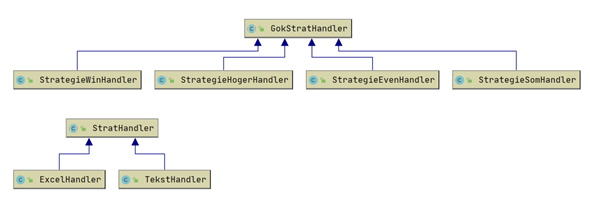
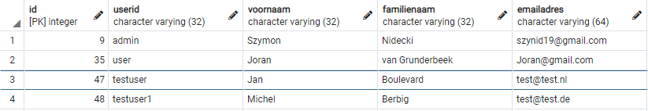
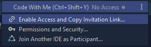
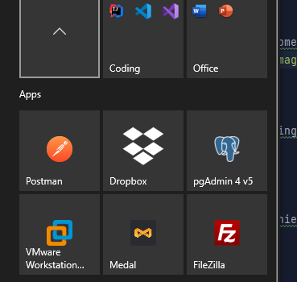
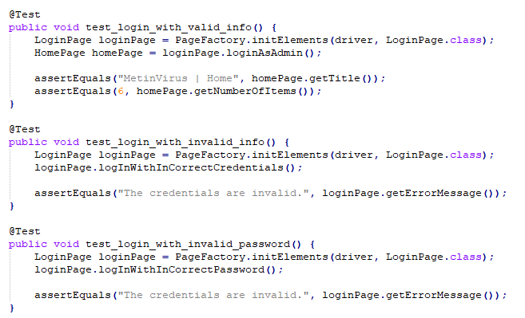

Hier vind je alle domeinspecifieke leerresultaten met gedragindicatoren en eindniveau (DLR) gegeven aan mij als student door UCLL.
| # | Domeinspecifiek leerresultaat | Vaardigheid |
|---|---|---|
| DLR 1 | De professionele bachelor TI analyseert een probleem, vertaalt dit naar een IT-context en geeft de informatiebehoeften van een organisatie gestructureerd weer door gebruik te maken van analyse-en modelleringstechnieken. | Slecht |
| Uitleg | De opleiding leert tot nu toe vele, verschillende aspecten van IT. Door de brede kennis vanuit meerdere systemen is het een goede weg naar dit doel. |  |
| DLR 2 | De professionele bachelor TI verzamelt en verwerkt proces-en datagegevens, slaat ze op en stelt ze ter beschikking, zodat deze op een correcte en efficiëntemanierkunnen worden opgevraagd. | Goed |
| Uitleg | Een van de vele aspecten die geleerd worden is het schematiseren van gegevens. |  |
| DLR 3 | De professionele bachelor TI ontwerpt, bouwt, documenteert en test kwalitatieve IT-oplossingen. | Zeer goed |
| Uitleg | De meerdere OLA's die zich concentreren op ontwerpen, bouwen en testen van projecten, applicaties en taken is de ontwikkeling van een applicatie nooit onvolledig. | |
| DLR 4 | De professionele bachelor TI installeert, configureert, beveiligt, onderhoudt en ondersteunt IT-oplossingen en past ze indien nodig aan zodat ze blijven beantwoorden aan de veranderende behoeften van een organisatie. | Goed |
| Uitleg | De IT-sector blijft nooit stil, met constante veranderingen in programmeertalen en hun ontwikkelingprogramma's is het nodig dat ik er steeds bij ben. | |
| DLR 5 | De professionele bachelor TI handelt deontologisch en maatschappelijk verantwoord, conform bedrijfs-en organisatiecontext, best practices en strategieën vanuit eigen inzicht en kennis. | Zeer goed |
| Uitleg | Mijn opleiding hecht veel belang aan kunnen voldoen aan een bedrijf hun wensen. Met meerdere vakken die zich concentreren op het flexibele werk vanuit meerdere programeertalen, systemen en oplossingen. | |
| DLR 6 | De professionele bachelor TI onderzoekt en evalueert kritisch bestaande en innovatieve IT-oplossingen. | Goed |
| Uitleg | Met een constant evolueerende sector is het belangrijk dat bestaande applicaties in een bedrijf steeds voldoen aan de benodigdheden. Mijn opleiding leert applicaties bouwen op een manier dat bestendig is tegen de toekomst. | |
| DLR 7 | De professionele bachelor TI geeft advies over IT-oplossingen, -producten, -diensten en –technologieën voor verschillende domeinen en/of sectoren. | Zeer goed |
| Uitleg | Een belang aan groepswerk en sterke motivatie voor 'pair programming', is wat mijn opleiding zeer belangrijk vindt. Dit is enorm hulpzaam omdat je steeds iets kan uitleggen aan de team of de team aan jou. |  |
| DLR 8 | De professionele bachelor TI kan zelfstandig en in een multidisciplinair en/of multicultureel team een opdracht op projectmatige wijze aanpakken. De professionele bachelor TI kan eenvoudig leidinggevende taken uitvoeren en een projectplan ontwerpen, interpreteren, uitvoeren, aanpassen en toelichten. | Zeer goed |
| Uitleg | Lokaal werken of enkel met vrienden is geen optie. De IT is overal en met projecten die mij engageren met studenten uit andere landen/culturen ben ik steeds bereid om te werken met wie ik moet. Als voorbeeld: Projectweek semester 2: met studenten uit Indië gewerkt. | |
| DLR 9 | De professionele bachelor TI communiceert minstens in het Nederlands en het Engels, mondeling en schriftelijk aangepast aan het doelpubliek. | Zeer goed |
| Uitleg | Talen die je niet zonder kunt in de IT. Basis Engels en sterk Nederlands is een behoefte in de opleiding met vakken die Frans aanleren. Dit zorgt voor een basis in de nodige talen. | |
| DLR 10 | De professionele bachelor TI is zich bewust van de internationale context van het vakgebied. | Goed |
| Uitleg | Met applicaties, projecten, IDE's en oplossingen in heel de wereld is het een gegeven. |  |
| DLR 11 | De professionele bachelor TI is ondernemend, neemt initiatief en reageert op nieuwe ontwikkelingen en toepassingsdomeinen. | Goed |
| Uitleg | De opleiding geeft af en toe een taak om een aankomende, nieuwe applicatie te testen. Dit gebeurde bijvoorbeeld met het bedrijf AND& en hun nieuw webapplicatie. |  |
| DLR 12 | De professionele bachelor TI ondersteunt veranderingsprocessen bij ingebruikname van IT-oplossingen. | Goed |
| Uitleg | Het is altijd mogelijk om met dezelfde, oude technieken de oplossingen te crëeren maar dat laat de opleiding niet toe. Steeds nieuwe methodes en technieken worden gevonden die moeten worden toegepast of bijgewerkt. |